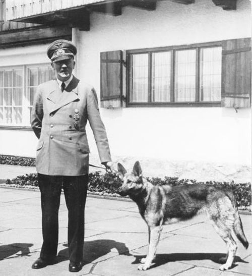

German Shepherd
ბლონდი (დ. 1941[კომ. 1] — გ. 29 აპრილი, 1945)[1] — ადოლფ ჰიტლერის ძაღლი, ჯიშით გერმანული ნაგაზი. ჰიტლერს ძაღლი, რომელიც მაშინ ჯერ კიდევ ლეკვი იყო,[2][3] მარტინ ბორმანმა 1941 წელს აჩუქა. 1945 წლის 16 იანვარს, ჰიტლერის ფიურერბუნკერში გადასვლის შემდეგ ბლონდიმაც მასთან ერთად შეიცვალა საცხოვრებელი ადგილი.[4]
